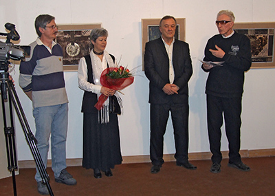
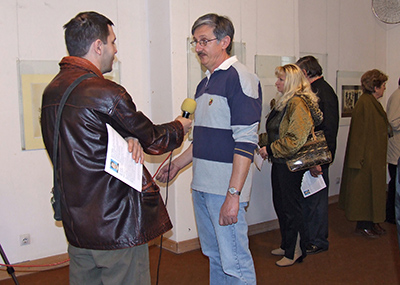
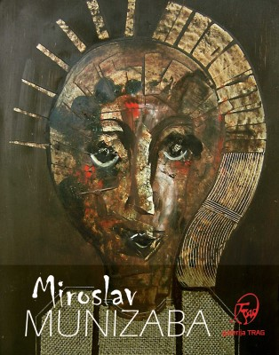

Samostalne izložbe:
- 2024. godine, Galerija kulturnog centra "Brana Crnčević" Ruma
- 2018. godine, Kulturni centar Zrenjanin
- 2017. godine u Muzeju Srema u Sremskoj Mitrovici, zajednički radovi: Munižaba-Stevanović-Savkov
- 2017. godine Kulturni centar Futog
- 2017. godine Gradska biblioteka Pančevo, zajednički radovi: Munižaba-Stevanović-Savkov
- 2017. godine Centar za kulturu Majdanpek, zajednički radovi: Munižaba-Stevanović-Savkov
- 2016. godine Galerija Centra za kulturu Ruma
- 2016. godine Galerija Rančićeva kuća, Centar za kulturu Grocka
- 2016. godine Galerija savremene umetnosti u Požarevcu
- 2015. godine Galerija moderne umetnosti Narodnog Muzeja u Smederevskoj Palanci
- 2015. godine Centar za kulturu Kovin
- 2015. godine Centar za kulturu Ruma
- 2014. godine 12 soba 8 izložbi u Kući Kralja Petra I u Beogradu sa Ljiljanom Stevanović u organizaciji ART MARKETA
- 2013. godine Carska Palata u Sremskoj Mitrovici
- 2012. godine Galerija TRAG Beograd
- 2012. godine Foaje Kulturnog centra Pančeva
- 2007. godine u poliklinici SIRMIUM-MEDIC u Sremskoj Mitrovici
- 2007. godine u galeriji Lazar Vozarević u Sremskoj Mitrovici
Izložbe u galeriji:
- 2024. godine, učesnik 19. Salona 30x30 u galeriji Kulturniog centara Zrenjanina
- 2024. godine, učesnik 28. Sremskomitrovačkog salona u galeriji “Lazar Vozarević” u Sremskoj Mitrovici
- 2024. godine, učesnik izložbe Matićevi dani, Ćuprija u Muzeju Horeum Margi-Ravno
- 2024. godine, učesnik 04. Bijenala umetnosti radova na papiru ARTiJA u galeriji Mostovi balkana u Kragujevcu
- 2024. godine, učesnik izložbe Festival Nušićijada u Domu kulture u Ivanjici
- 2024. godine, učesnik 33. Izložbe malog formata u Kulturnom centru Šabac
- 2024. godine, učesnik 5. Međunarodnog bijenala radova na papiru u Muzeju Kozare, Prijedor
- 2024. godine, učesnik XXXI Izložbe crteža, Kulturni centar Šabac
- 2024. godine, učesnik 18. Salona 30x30 u galeriji Kulturnog centra Novog Sada
- 2024. godine, učesnik 17. međunarodnog bijenala umetnosti minijature, Gornji Milanovac
- 2024. godine, učesnik i18. Salona 30x30 u Muzeju Srema u Sremskoj Mitrovici
- 2024. godine, učesnik 18. Salona 30x30 u Galeriji savreneme umetnosti Kulturnog centra Pančevo
- 2024. godine, učesnik 18. Salona 30x30 u Galeriji Kuća Đure Jakšića u Beogradu
- 2023. godine, učesnik izložbe 30x30 u Galeriji Kulturnog centra Zrenjanin
- 2023. godine, učesnik XII Međunarodnog bijenalnog festivala umetnosti minijature BiH u Tuzli
- 2023. godine, učesnik 10. MEĐUNARODNE IZLOŽBE MALOG FORMATA u Galeriji Karlovačke crtačke škole, Sremski Karlovci
- 2023. godine, učesnik 66.Oktobrskog salona u Narodnom muzeju Šabac
- 2023. godine, učesnik 37. Oktobarkog salona, Centar za kulturu Kovin
- 2023. godine, učesnik 45th Parallel mail Art projekta Sun&Sea Rumunija
- 2023. godine, učesnik 32. Izložbe malog formata u Kulturnom centru Šabac
- 2023. godine, učesnik International Mail Art projekta “Homage to P. Picasso“ Berlin, Germany
- 2023. godine, učesnik 30. Jubilarne izložbe crteža, Kulturni centar Šabac
- 2023. godine, učesnik izložbe 30x30 u galeriji Kulturnog centra Novog Sada
- 2023. godine, učesnik prolećne izložbe ULU Sirmium u Galeriji Lazar Vozarević u Sremskoj Mitrovici
- 2023. godine, učesnik izložbe 30x30 u Muzeju Srema u Sremskoj Mitrovici
- 2023. godine, učesnik izložbe 30x30 u Galeriji savreneme umetnosti Kulturnog centra Pančevo
- 2023. godine, učesnik izložbe 30x30 u Galeriji Kuća Đure Jakšića u Beogradu
- 2022. godine, učesnik 22. Rumskog likovnog salona u Kulturnom centri Brana Crnčević u Rumi
- 2022. godine, učesnik Decembarske izložbe ULU Sirmium u Muzeju Srema u Sremskoj Mitrovici
- 2022. godine, učesnik izložbe 30x30 u Galeriji Kulturnog centra Zrenjanin
- 2022. godine, učesnik XXIII Zrenjaninskih susreta slikara u Galeriji Narodnog Muzeja Zrenjanin
- 2022. godine, učesnik XIX Salona minijatura ZRNO 2022 Zrenjanin
- 2022. godine, učesnik 03. Bijenala umetnosti radova na papiru ARTiJA u galeriji Mostovi balkana u Kragujevcu
- 2022. godine, učesnik 56. Oktobrskog salona u Narodnom muzeju Šabac
- 2022. godine, učesnik Pokajinske Smotre likovnog stvaralaštva amatera u Novom Bečeju
- 2022. godine, učesnik Zonske Smotre likovnog stvaralaštva amatera u galeriji Kuća Vojinović u Inđiji
- 2022. godine, učesnik 19.Smotre likovnog stvaralaštva amatera grada Sremska Mitrovica u galeriji Lazar Vozarević
- 2022. godine, učesnik 36.Oktobarkog salona, Centar za kulturu Kovin
- 2022. godine, učesnik XXIX Izložbe crteža, Kulturni centar Šabac
- 2022. godine, učesnik prolećne izložbe ULU Sirmium u Galeriji Lazar Vozarević u Sremskoj Mitrovici
- 2022. godine, učesnik izložbe 30x30 u galeriji Kulturnog centra Novog Sada
- 2022. godine, učesnik izložbe 30x30 u Muzeju Srema u Sremskoj Mitrovici
- 2022. godine, učesnik izložbe 30x30 u Galeriji savreneme umetnosti Kulturnog centra Pančevo
- 2022. godine, učesnik izložbe 30x30 u Galeriji Kuća Đure Jakšića u Beogradu
- 2022. godine, učesnik 5-og Bijenala crteža i grafike u memorijalnoj galeriji “Dušan Starčević “u Smederevskoj Palanci
- 2021. godine, učesnik Decembarske izložbe ULU Sirmium u Muzeju Srema u Sremskoj Mitrovici
- 2021. godine, Učesnik 22. smotre likovnog stvaralaštva amatera u galeriji Doma kulture u Novom Bečeju
- 2021. godine, Učesnik 22. smotre likovnog stvaralaštva amatera u galeriji KUĆA VOJINOVIĆ u Inđiji
- 2021. godine, učesnik 35. Oktobarskog salona, Kulturni centar Kovin
- 2021. godine, učesnik izložbe EHO RUBOVI I DLANOVI VIII foaje Centra za kulturu Valjevo
- 2021. godine, učesnik izsložbe SLIKARI I VAJARI SREMA u Zavičajnom muzeju Ruma
- 2021. godine, učesnik izložbe ULU Sirmium u galeriji Lazar Vozarević u Sremskoj Mitrovici
- 2021. godine, učesnik izložbe 30x30 u galeriji Kulturnog centra Novog Sada
- 2021. godine, učesnik izložbe 30x30 u Muzeju Srema u Sremskoj Mitrovici
- 2021. godine, učesnik izložbe "Pogled u neočekivano" u umetničkom paviljonu Cvijeta Zuzorić u Beogradu
- 2021. godine, učesnik izložbe 30x30 u Galeriji savreneme umetnosti Kulturnog centra Pančevo
- 2021. godine, učesnik izložbe 30x30 u galeriji Kuća Đure Jakšića u Beogradu
- 2020. godine, učesnik izložbe likovne kolonije EXO RUBOVI VII, Valjevo u galeriji Centra za kulturu Valjevo.
- 2020. godine, učesnik Internacionalne likovne izložbe IMAGINACIJA U SUSRETANJU u galeriji Centra za kulturu Valjevo
- 2020. godine, učesnik izložbe 30x30 u organizaciji Kulturnog centra Zrenjanin
- 2020. godine, učesnik izložbe 30x30 u organizaciji Kulturnog centra Zrenjanin
- 2020. godine učesnik XXIX izložbe malog formata, Kulturni centar Šabac
- 2020. godine, učesnik XXVII tradicionalne izložbe crteža, Kulturni centar Šabac
- 2020. godine, učesnik on line izložbe BELE NOĆI u organizaciji MajdanArt iz Majdanpeka
- 2020. godine, učesnik XV međunarodnog bijenala umetnosti minijature, Gornji Milanovac
- 2020. godine, učesnik E izložbe Rođendan u doba Korone u orgnizaciji ART Centra Beograd
- 2020. godine, učesnik izložbe povodom 20.godina MajdanArta u Centru za kulturu i obrazovanje Donji Milanovac
- 2020. godine, učesnik izložbe 30x30 u Galeriji savreneme umetnosti Kulturnog centra Pančevo
- 2020. godine, učesnik izložbe 30x30 u galeriji Kuća Đure Jakšića u Beogradu
- 2019. godina: učesnik 21. Rumskog Likovnog salona u Kulturnom centru “Brana Crnčević “ Ruma
- 2019. godina: učesnik Decembarske izložbe ULU Sirmium u Muzeju Srema u Sremskoj Mitrovici
- 2019. godina: učesnik izložbe 30x30 u organizaciji Kulturnog centra Zrenjanin
- 2019. godina: učesnik Jesenjeg umetničkog salona u prostoru Kulturno prosvetnog društva „Đura Kiš“ Šid
- 2019. godina: učesnik 10. Bijenala umetnost minijature BIH u organizaciji Bosanskog kulturnog centra Tuzla
- 2019. godina: učesnik X jubilarne međunarodne izložbe Art in Miniature, u galeriji KRUG , Petrovac na Mlavi
- 2019. godina: učesnik 33. Oktobarskog salona, Kulturni centar Kovin
- 2019. godina: učesnik izložbe ULU Sirmium u Galariji Lazar Vozarević u Sremskoj Mitrovici
- 2019. godina: učesnik Droitwich Mail Art projekta United Kingdom
- 2019. godina: ućesnik VI izložbe Matićevi dani, Ćuprija u Muzeju Horeum Margi-Ravno
- 2019. godina: učesnik II izložbe Nušićevi dani u Ivanjici
- 2019. godina: učesnik X jubilarne međunarodne izložbe Art in Miniature, Majdanpek
- 2019. godina: učesnik XXVIII Izložbe Malog formata, Kulturni centar Šabac
- 2019. godina: učesnik XXVI tradicionalne izložbe crteža, Kulturni centar Šabac
- 2019. godina: učenik 3. Internacionalne izložbe u Centru za kulturu Valjevo
- 2019. godina: učesnik LXIV MAJSKIH SUSRETA u galeriji „Akademija 28„ u Beogradu
- 2019. godina: učesnik izložbe 30x30 u Kulturnom centru Novog Sada
- 2019. godina: učesnik VI Izložbe slika malog formata u galeriji Dobo Tihomer u Kanjiži
- 2019. godina: učesnik 8.martovske izložbe ULU Sirmium u biblioteci Grigorije Vozarević u Sremskoj Mitrovici
- 2019. godina: učesnik izložbe 30x30 u Muzeju Srema u Sremskoj Mitrovici
- 2019. godina: učesnik izložbe INPULS u Tuluz Lotrek art kafeu u Beogradu
- 2019. godina: učesnik izložbe 30x30 u Galeriji savreneme umetnosti Kulturnog centra Pančevo
- 2019. godina: učesnik izložbe 30x30 u ART centru u Beogradu
- 2018. godina: učesnik 20. Rumskog Likovnog salona u Kulturnom centru “Brana Crnčević “ Ruma
- 2018. godina: učesnik 7. Mail Art bijenala Spanyolatha – Egon Šile, Miškolc , Hungary
- 2018. godine učesnik Decembarseke izložbe ULU Sirmium u Muzeju Srema u Sremskoj Mitrovici
- 2018. godine učesnik izložbe MiniFORM-art u Tuluz Lotrek art kafeu u Beogradu
- 2018. godine učesnik izložbe 30x30 u organizaciji Kulturnog centra Zrenjanin
- 2018. godine učesnik VI Izložbe slika malog formata u Subotici
- 2018. godine učesnik izložbe MiniArture u galeriji NLB u Skoplju, Makedonija
- 2018. godina,učesnik 6. Međunarodnog konkursa malog formata u organizaciju Udruženja nezavisnih umetnika Novog Sada
- 2018. godine učesnik 62.Oktobarkog salona u Narodnom muzeju, Šabac
- 2018. godina, učesnik XVIII-tih Zrenjaninskih susreta slikara
- 2018. godina 40.World Gallery of Drawing – OSTEN Biennial of drawing, Skopje 2018 , Macedonia
- 2018. godine, učesnik 32. Oktobarskog salona, Kulturni centar Kovin
- 2018. godine, učesnik 3. Međunarodnog bijenala malog formata MKU “PETEFI“ Zrenjanin
- 2018. godina, učesnik 27. Art Marketa u galeriji Kuća Kralja Petra I u Beogradu
- 2018. godina učesnik 2. Međunarodnog bijenala radova na papiru u Muzeju Kozare, Prijedor
- 2018. godine učesnik IX Međunarodne izložbe Art in Miniature, Majdanpek
- 2018. godina, učesnik izložbe u Carskoj palati u Sremskoj Mitrovici na manifestaciji Zlatni dani vina u organizaciji društva poštovalaca vina Marcus Aurelius Probus
- 2018. godine učesnik II “ HAL „ Mail art projekta 2018., Balaton Hungary
- 2018. godine učesnik 27. izložbe crteža, Kulturni centar Šabac
- 2018. godine učesnik Internacionalne likovne izložbe Minijature Preokupacije-Prožimanje, Centar za kulturu Valjevo
- 2018. godine učesnik XXV izložbe crteža, Kulturni centar Šabac
- 2018. godine učesnik Droitwich Mail Art projekta United Kingdom
- 2018. godine učesnik izložbe 30x30 u Kulturnom centru Novog Sada
- 2018. godine učesnik izložbe u Narodnoj biblioteci Veljko Dugošević, Golubac
- 2018. godine učesnik izložbe 30x30 u Muzeju Srema u Sremskoj Mitrovici
- 2018. godine učesnik izložbe MiniArture u galeriji Singidunum u Beogradu
- 2018. godine učesnik 8.martovske izložbe ULU Sirmium u Carskoj palati u Sremskoj Mitrovici
- 2018. godine učesnik izložbe 30x30 u Galeriji savreneme umetnosti u Pančevu
- 2018. godine učesnik izložbe 30x30 u ART centru u Beogradu
- 2017. godine učesnik Mail Art projekta “Finland – 100 years of independency”.
- 2017. godine učesnik V. Međunaronnog bijenala Vo-Va minimart, Mađarska
- 2017. godine učesnik 19. Rumskog likovnog salona u Kulturnom centru Ruma
- 2017. godina učesnik Novogodišnje prodajne izložbe u Galeriji Le Pettit u Smederevu
- 2017. godine učesnik izložbe 30x30 u organizaciji Kulturnog centra Zrenjanin
- 2017. godine učesnik izložbe ULU Sirmium u Muzeju Srema u Sremskoj Mitrovici
- 2017. godine učesnik izložbe ULU Sirmium u galeriji Centra za kulturu Brana Crnčević u Rumi
- 2017. godine učesnik izložbe u povodu 500 godina reformacije u Carskoj palati u Sremskoj Mitrovici
- 2017. godine učesnik 9. Bijenala umetnost minijature BIH u organizaciji Bosanskog kulturnog centra Tuzla
- 2017. godina učesnik 31. Oktobarskog salona Kulturni centar Kovin
- 2017. godine učesnik Mail art projekta Grape and wine, Balaton Hungary
- 2017. godina učesnik izložbe u povodu 500 godina reformacije na gradskoj plaži u Sremskoj Mitrovici
- 2017. godine učesnik XXIV izložbe crteža, Kulturni centar Šabac
- 2017. godina učesnik izložbe minijatura ZRNO, Zrenjanin u organizaciji Udruženja likovnih amatera Zrenjanin
- 2017. godina učesnik Droitwich Mail Art project 2017. Long Live Art, United Kingdom
- 2017. godine učesnik 8.martovske izložbe ULU Sirmium u biblioteci Grigorije Vozarević u Sremskoj Mitrovici
- 2017. godine učesnik izložbe 30x30 u Muzeju Srema u Sremskoj Mitrovici
- 2017. godine učesnik izložbe 30x30 u Kulturnom centru Pančevo
- 2017. godine učesnik izložbe 30x30 u ART centru u Beogradu
- 2016. godina učesnik VI International SpanishFlu Mail Art Biennial, Miškolc, Hu
- 2016. godine učesnik 18. Rumskog likovnog salona u Kulturnom centru Ruma
- 2016. godine učesnik konkursa Art of frame
- 2016. godine učesnik Retrospektivne izložbe ULU Sirmium u galeriji Muzeja Srema
- 2016. godine učesnik Retrospective Exibition at Kensington & Chelsea College Gallery U.K.
- 2016. godine učesnik izložbe 30x30 u organizaciji Kulturnog centra Zrenjanin
- 2016. godine učesnik međunarodne izložbe Art in Miniature, u Muzeju primenjene umetnosti u Beogradu
- 2016. godina učesnik 1. Međunarodnog bijenala radova na papiru u Muzeju Kozare, Prijedor
- 2016. godine učesnik međunarodne izložbe Art in Miniature, Majdanpek
- 2016. godina učesnik XXIII izložbe slika malog formata, Kulturni centar Šabac
- 2016. godine učesnik XIII međunarodnog bijenala umetnosti Gornji Milanovac
- 2016. godine učesnik 18. Rumskog likovnog salona u Kulturnom centru Ruma
- 2016. godine učesnik Retrospektivne izložbe ULU Sirmium u galeriji Muzeja Srema
- 2016. godine učesnik Retrospective Exibition at Kensington & Chelsea College Gallery U.K.
- 2016. godine učesnik izložbe 30x30 u organizaciji Kulturnog centra Zrenjanin
- 2016. godine učesnik međunarodne izložbe Art in Miniature, u Muzeju primenjene umetnosti u Beogradu
- 2016. godina učesnik 1. Međunarodnog bijenala radova na papiru u Muzeju Kozare, Prijedor
- 2016. godine učesnik međunarodne izložbe Art in Miniature, Majdanpek
- 2016. godina učesnik XXIII izložbe slika malog formata, Kulturni centar Šabac
- 2016. godina učesnik V Medjunarodne izložbe, slike malog formata u Galeriji Otvorenog univerziteta Subotica
- 2016. godine učesnik prolećne izložbe ULU Sirmium u galeriji Lazar Vozarević
- 2016. godine učesnik XXIII izložbe crteža, Kulturni centar Šabac
- 2016. godine učesnik Beogradskog internacionalnog salona u organizaciji Kulturne asocijacije Beograda
- 2016. godine učesnik V Medjunardonog bijenala malog formata VoVa , Balaton, Mađarska
- 2016. godina učesnik Art of Caring exhibition. It;s at the Rose Theatre in Kingston-upon Thames UK u organizaciji Mr. Alban Low-a
- 2016. godina učesnik Droitwich Mail Art project 2016 Let s Do SHAKSPEARE, United Kingdom
- 2016. godina učesnik Mail Art project, Tenerife, Spain http://themailmanmailartprojectspain2016.blogspot.com.es/
- 2016. godina učesnik Mail Art project KEVIN & JEMES GILLEN, Kent, United Kingdom
- 2016. godina učesnik 1 st International Mail Art Biennial Hamik Kemal Univesitesi Turska
- 2016. godine učesnik izložbe 30x30 u Narodnom Muzeju u Sremskoj Mitrovici
- 2016. godine učesnik izložbe 30x30 u ART CENTRU u Beogradu
- 2016. godine učesnik izložbe 30x30 u Kulturnom centru Pančevo
- 2015. godine učesnik 17. Rumskog likovnog salona u Kulturnom centru Ruma
- 2015. godine učesnik V Bijenala SRPSKI PEJZAŽ u organizaciji Centra za kulturu i umetnost Aleksinac
- 2015. godine učesnik izložbe radova sa likovne kolonije EHO RUBOVI II u klubu Narodnog muzeja Valjevo
- 2015. godine učesnik izložbe 30x30 u organizaciji Kulturnog centra Zrenjanin
- 2015. godine učesnik međunarodne izložbe Art in Miniature, Majdanpek, Beograd u galeriji Matice iseljenika
- 2015. godine učesnik Otvorenog oktobarskog salona u Beogradu u Klubu ljubitelja teške industrije – zajednički rad sa Ljiljanom Stevanović
- 2015. godine učesnik 8. Bijenala umetnost minijature BIH u organizaciji Bosanskog kulturnog centra Tuzla
- 2015. godine učesnik izložbe Ivankovac 2015,povodom obeležavanja 210.godišnjice boja na Ivankovcu, u organizaciji Muzeja Horreum Margi-Ravno
- 2015. godine učesnik međunarodne izložbe Art in Miniature, Majdanpek, Petrovac na Mlavi u organizaciji Zavicajnog muzeja Petrovac na Mlavi i Galerije Krug
- 2015. godine učesnik 3, Medjunarodnog konkursa malog formata Novi Sad u organizaciji Udruženja nezavisnih umetnika Novi Sad
- 2015. godine učesnik III Bijenala likovnih i primenjenih umetnosti, Centar za kulturu Kovin
- 2015. godine učesnik The 70th Anniversary of Korean Liberation, International Art Exhibition, Koreja
- 2015. godine učesnik izložbe Matićevi dani, Ćuprija u Muzeju Horreum Margi-Ravno
- 2015. godine učesnik The International Mail Art Exibition „EVA„ Auid 2015 Rumunija
- 2015. godine učesnik međunarodne izložbe Art in Miniature, Majdanpek
- 2015. godine učesnik IV Medjunardonog bijenala minijature “VoVa“ MiniArt 2015. Mađarska
- 2015. godine učesnik II Međinarodne izložbe MOSLAVAČKE MINIJATURE u Kninu
- 2015. godine učesnik XXII izložbe crteža, Kulturni centar Šabac
- 2015. godine učesnik izložbe Svetske asocijacije vizuelnih i eksperimentalnih umetnika „NOVO“ u Klubu Narodnog muzeja Valjevo
- 2015. godine učesnik 2, Medjunarodne izložbe malog formata u galeriji KIC “Mladost“ Futog
- 2015. godine učesnik na LX Majskim susretima u galeriji AKADEMIJA 28 u Beogradu
- 2015. godine učesnik 29.Prolećnog salona u galariji Kulturnog centra Aleksinac
- 2015. godine učesnik izložbe „Beograd - grad u kome stvaram“ u galeriji Singidunum u Beogradu
- 2015. godine učesnik International Nurses Day on the 12.May 2015. It;s at the Rose Theatre in Kingston-upon Thames UK u organizaciji Mr. Alban Low-a
- 2015. godine učesnik II Međinarodne izložbe MOSLAVAČKE MINIJATURE u organizaciji Moslavački štrk, Popovača, Hrvatska
- 2015. godine učesnik I Međunarodne izložbe BeogradskaMinijatura 2015 u organizaciji ArtCentra BG
- 2015. godine učesnik izložbe 30x30 u Muzeju Srema u Sremskoj Mitrovici
- 2015. godine učesnik izložbe 30x30 u Kulturnom centru
- 2014. godine učesnik 16. Rumskog likovnog salona u Kulturnom centru Ruma
- 2014. godine učesnik izložbe Niški crtež u organizaciji Galerije savremene umetnosti Niš
- 2014. godine učesnik izložbe 30x30 u organizaciji Kulturnog centra Zrenjanin
- 2014. godine učesnik izložbe Mail art, Incline Galery in San Francisco
- 2014. godine učesnik 32. Jesenjeg salona u galeriji Kulturnog centra Aleksinac
- 2014. godine učesnik IV Medjunarodne izložbe, slike malog formata, Art galery Bačka Topola
- 2014. godine učesnik IV Medjunarodne izložbe, slike malog formata u Galeriji Otvorenog univerziteta Subotica
- 2014. godine učesnik ZEMUNSKOG SALONA u galeriji Stara Kapetanija
- 2014. godine učesnik 2, Medjunarodnog bijenala male grafike 2014, u Nišu u izložbenom prostoru Paviljon u Tvrđavi
- 2014. godine učesnik međunarodne izložbe Art in Miniature, Majdanpek, Beograd u galeriji Matice iseljenika
- 2014. godine učesnik međunarodne izložbe Art in Miniature, Majdanpek, Petrovac na Mlavi u organizaciji Zavicajnog muzeja Petrovac na Mlavi i Galerije Krug
- 2014. godine učesnik 17. Medjunarodne izložbe minijatura, Zaprešić, Hrvatska, Beograd, galerija kuća Đure Jakšića
- 2014. godine učesnik izložbe Mail art, tema duga, studio J-1324, Victoria, Canada
- 2014. godine učesnik XIV-tih zrenjaninskih susreta slikara u Narodnom muzeju Zrenjanin
- 2014. godine učesnik 2. Medjunarodnog konkursa malog formata Novi Sad u organizaciji Udruženja nezavisnih umetnika Novi Sad
- 2014. godine učesnik 58. Oktobarskog salona u Šapacu u Narodnom muzeju Šabac.
- 2014. godine učesnik izložbe Matićevi dani, Ćuprija u Muzeju Horreum Margi-Ravno
- 2014. godine učesnik IV Medjunardonog Balaton salona Mađarska
- 2014. godine učesnik međunarodne izložbe Art in Miniature, Majdanpek
- 2014. godine učesnik Papergirl, Beograd
- 2014. godine učesnik izložbe Minijatura u Zrenjaninu u organizaciji SAKUD Zrenjanin
- 2014. godine učesnik XXI izložbe crteža, Kulturni centar Šabac
- 2014. godine učesnik izložbe Mail art, Starzbur, Francuska
- 2014. godine učesnik na LIX Majskim susretima u galeriji AKADEMIJA 28 u Beogradu
- 2014. godine učesnik 17. Medjunarodne izložbe minijatura, Zaprešić, Hrvatska
- 2014. godine učesnik II Medjunarodnog trijenala Vizuelne i eksperimentalne poezije u Valjevu u organizaciji Dejana Bogojevića, književnika i likovnog umetnika
- 2014. godine učesnik Prolećnog salona u galariji Kulturnog centra Aleksinac
- 2014. godine ucesnik izložbe koju organizuje FAB fridge London /izložba magneta za frižidere/
- 2014. godine učesnik I Bijenale crteža, Smedervska Palanka, U Memorijalnoj galeriji Dušan Starčević
- 2014. godine učesnik XII međunarodnog bijenala umetnosti minijature, Gornji Milanovac
- 2014. godine učesnik izložbe MOSLAVAČKE MINIJATURE u organizaciji Moslavački štrk, Popovača, Hrvatska
- 2014. godine učesnik izložbe Mail art, Spanyolnatha, Miskolc, Madjarska
- 2013. godine Niški crtež u organizaciji Galerije savremene umetnosti Niš
- 2013. godine učesnik Međunarodne izložbe minijatura Galerije TRAG u Beogradu
- 2013. godine učesnik izložbe 30x30 u organizaciji Kulturnog centra Zrenjanin
- 2013. godine učesnik Medjunardonog bijenala malog formata I Homorod Salon 2013. Rumunija u organizaciji Fundation Homorod Arts
- 2013. godine Papergirl Beograd
- 2013. godine izlozba HEIL KUNST u Muzeju u Vranju
- 2013. godine Art in Miniature u Beogradu u Galeriji matice iseljenika
- 2013. godine Papergirl Subotica
- 2013. godine učesnik VII Bijenala umetnost minijature BIH u organizaciji Bosanskog kulturnog centra Tuzla
- 2013. godine izložio 12 radova u Carskoj palati u Sremskoj Mitrovici na manifestaciji Zlatni dani vina u organizaciji društva poštovalaca vina Marcus Aurelius Probus
- 2013. godine učesnik XXII izložbe malog formata, Kulturni centar Šabac
- 2013. godine Art on Call Official Art Show 2013
- 2013. godine učesnik međunarodne izložbe Art in Miniature, Majdanpek
- 2013. godine učesnik III Medjunardonog bijenala minijature “VoVa “ MiniArt 2013. Mađarska
- 2013. godine učesnik izložbe Minijatura u Zrenjaninu u organizaciji SAKUD Zrenjanin
- 2013. godine II Međunarodna izložba malog formata Novi Pazar
- 2013. godine učesnik manifestacije Noć otvorenih ateljea u organizaciji Udruženja slikara i vajara Beograda
- 2013. godine RUBOVI I DLANOVI Internacionalni likovni projekat u galeriji centra za kulturu Valjevo, u organizaciji Dejana Bogojevića književnika i likovnog stvaraoca
- 2013. godine Papergirl Novi Sad u organizaciji Kulturanova
- 2013. godine učesnik izložbe HEIL KUNST u galeriji Centra za kulturu Aleksinac u organizaciji Zvonimira Kostića Palanskog
- 2013. godine učesnik međunarodne izložbe Moja galerija moji prijatelji, Centar za kulturu Majdanpek u organizaciji Ljiljane Stevanović slikarke
- 2012. godine učesnik Međunarodne izložbe minijatura Galerije TRAG u Beogradu
- 2012. godine učesnik izložbe 30x30 u organizaciji Kulturnog centra Zrenjanin
- 2012. godine učesnik IX Bijenala portreta, Kulturni centar Šabac
- 2012. godine učesnik SREMSKOG SALONA u Galeriji Lazar Vozerević
- 2012. godine učesnik izložbe Der blau reiter u galeriji Centra za kulturu Aleksinac, galeriji Sinagoga u Nišu u organizaciji Zvonimira Kostića Palanskog
- 2012. godine 40. World Gallery of Drawing – OSTEN Biennial of drawing, Skopje 2012, Macedonia
- 2012. godine učesnik XII-tih zrenjaninskih susreta slikara
- 2012. godine SLIKE PROCESA Internacionalni likovni projekat u galeriji RIM Požega, u organizaciji Dejana Bogojevića književnika i likovnog umetnika
- 2012. godine Papergirl Beograd
- 2012. godine učesnik međunarodne izložbe Art in Miniature, Majdanpek
- 2012. godine učesnik XIX izložbe crteža, Kulturni centar Šabac
- 2012. godine učesnik manifestacije Noć otvorenih ateljea u organizaciji Udruženja slikara i vajara Beograda.
- 2012. godine Papergirl Novi Sad u organizaciji Kulturanova
- 2012. godine učesnik izložbe Minijatura u Zrenjaninu u organizaciji SAKUD Zrenjanin
- 2012. godine TEME IZ (VAN) Internacionalni likovni projekat u Klubu Narodnog muzeja Valjevo, u organizaciji Dejana Bogojevića književnika i likovnog umetnika
- 2012. godine učesnik izložbe 48 Slikara Srema iz fundusa galerije Lazar Vozarević iz Sremske Mitrovice
- 2011. godine učesnik izložbe Inspiracija Pikaso u galeriji Sinagoga u Nišu u organizaciji Zvonimira Kostića Palanskog. postavka obišla 3 grada : Knjaževac, Bor i Aleksinac
- 2011. godine učesnik izložbe minijatura Minimum maximum 3 u Muzeju Republike Srpske u Banjaluci u organizaciji UAA Banjaluka
- 2011. godine izložene slike u Valjevu u knjižari Službeni glasnik u okviru promocije časopisa AKT u organizaciji Dejana Bogojecića književnika i likovnog umetnika
- 2011. godine učesnik izložbe 30x30 u organizaciji Kulturnog centra Zrenjanin
- 2011. godine učesnik Međunarodne izložbe minijatura Galerije TRAG u Beogradu
- 2011. godine učesnik XI-tih zrenjaninskih susreta slikara u Narodnom muzeju Zrenjanin
- 2011. godine učesnik međunarodne izložbe Art in Miniature, Majdanpek
- 2011. godine učesnik XX izložbe malog formata, Kulturni centar Šabac
- 2011. godine učesnik izložbe Minijatura u Zrenjaninu u organizaciji SAKUD Zrenjanin
- 2011. godine učesnik I Medjunarodnog trijenala Vizuelne i eksperimentalne poezije u Valjevu u organizaciji Dejana Bogojevića, književnika i likovnog umetnika
- 2011. godine učesnik manifestacije Noć otvorenih ateljea u organizaciji Udruženja slikara i vajara Beograda.
- 2011. godine izložba mail art u Nišu u prostorijama Kulturnog centra Niš, omaž Paul Celanu u organizaciji Zvonimira Kostića Palanskog ( u 6 gradova u Srbiji )
- 2010. godine učesnik Jubilarne izložbe ULU SIRMIUM u Muzeju srema u Sremskoj Mitrovici
- 2010. godine učesnik Međunarodne izložbe minijatura Galerije TRAG u Beogradu
- 2010. godine učesnik izložbe 30x30 u organizaciji Kulturnog centra Zrenjanin
- 2010. godine učesnik SREMSKOG SALONA u Galeriji Lazar Vozerević
- 2010. godine učesnik X-og jubilarnog novembarskog salona, Galerija Vladislav Maržik, Kraljevo
- 2010. godine učesnik međunarodne izložbe Art in Miniature, Majdanpek
- 2010. godine učesnik XIX izložbe malog formata, Kulturni centar Šabac
- 2010. godine učesnik majske izložbe ULU Sirmium u Galeriji Lazar Vozarević
- 2010. godine učesnik X međunarodnog bijenala umetnosti minijature, Gornji Milanovac
- 2010. godine učesnik izložbe ULU Sirmium u biblioteci Grigorije Vozarević
- 2009. godine učesnik jesenje izložbe ULU Sirmium u Galeriji Muzeja Srema
- 2009. godine učesnik majske izložbe ULU Sirmium u Galeriji Lazar Vozarević
- 2008. godine učesnik SREMSKOG SALONA u galeriji Lazar Vozarević
- 2008. godine učesnik majske izložbe ULU Sirmium u Galeriji Lazar Vozarević
- 2007. godine učesnik Vojvođanskog salona u Galeriji Lazar Vozarević
- 2007. godine izlagao na 8. smotri likovnog stvaralaštva Amatera Vojvodine u galeriji Doma kulture u Novom Bečeju u organizaciji Zavoda za kulturu Vojvodine
- 2007. godine izlagao na smotri likovnog stvaralaštva Amatera opštine Sremska Mitrovica u galeriji Muzeja Srema u organizaciji Ustanove za negovanje kulture SREM
- 2007. godine učesnik izložbe ULU Sirmium u Zavičajnom muzeju u Rumi
- 2007. godine učesnik izložbe ULU Sirmium u galeriji Lazar Vozarević
- 2006. godine učesnik Sremskog salona u Galeriji Lazar Vozarević
- 2006. godine učesnik Pokajinske smotre likovnog stvaralaštva amatera Vojvodine u Novom Bečeju
- 2006. godine izlagao na zonskoj smotri amatera Srema u galeriji Muzeja Srema u organizaciji Ustanove za negovanje kulture SREM
- 2006. godine izlagao na smotri amatera Srema u galeriji Muzeja Srema u organizaciji Ustanove za negovanje kulture SREM
- 2005. godine izlagao na zonskoj smotri likovnog Stvaralaštva u Rumi
- 2005. godine izlagao na smotri likovnog stvaralaštva amatera Srema u galeriji Muzeja Srema u organizaciji Ustanove za negovanje kulture SREM
- 2005. godine učesnik Sremskog salona u Galeriji Lazar Vozarević
- Više puta kolektivno izlagao u Sremskoj Mitrovici u Galeriji Lazar Vozarević u periodu 1970-1973. godine